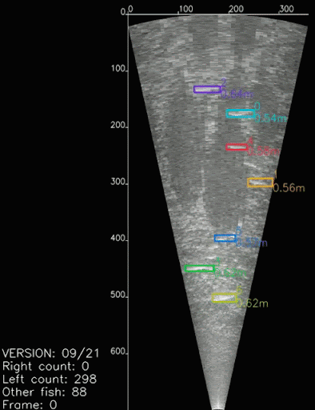

Automated salmon monitoring
Annotate faster.
Keep up with the run.
FishEye helps ecologists annotate ARIS and DIDSON sonar files faster. It prepares outputs for the workflows you already use, so you can validate and correct the results with confidence.
LIVE SAMPLEARIS / LEFT

Salmon detectedconfidence 98.4%
Why FishEye
Monitoring should move at the speed of the river.
Sonar works in darkness, turbid water, and over long ranges, but manual annotation makes large-scale monitoring slow and expensive. FishEye gives ecologists a faster first pass while keeping their expertise at the center of the workflow.
Run ARIS or DIDSON data through FishEye, open the outputs in your existing ARISFish workflow, then validate and correct the annotations before finalizing your counts.